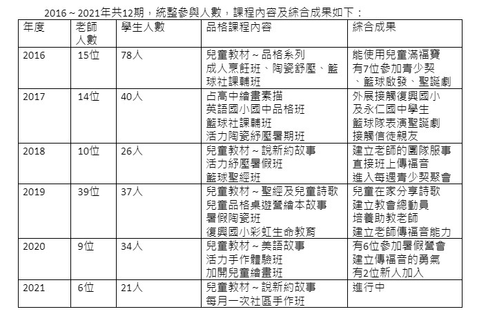

2016～2021年外展事工：活力俱樂部綜合成果
一、異象：「但聖靈降臨在你們身上，你們就必得著能力；並要在耶路撒冷…….作我的見證。」（徒一:8）
二、目標：透過才藝班的方式向社區傳福音
1. 品格方面：建立兒童／青少年／成人的生命教育
2. 才藝方面：建立兒童專長的技能
3. 建立老師與家長有深一層關係
三、參加對象：幼稚園中班～成人
四、實施狀況及綜合成果

五、活力俱樂部 鍾曉梅老師的分享
在我的心中，活力俱樂部的定位是：在神祝福中的一個學習分享園地。
我從小就喜歡美術活動，只要是可以親近自然，追求美與傳愛的活動，一群人，一同分享彼此的生活，一起動手做，一同成長，都是讓我覺得十分開心的事情。
常常在不同場域學習到新鮮有趣的事物，第一個想法就是：跟教會的肢體們分享。心裡也常想像大家在課程中學習，然後課程內容讓大家滿意，自己的教學讓學員覺得很有收穫而自己發呆傻笑起來。在心中也深信將來在天家，大家仍能聚在一起一同服事神。
目前活力有開許多不同的課程，媽媽手做班與兒童繪畫班是跟隨學生在學校上、下學期，每年都會開春、秋兩季。然後每週日有週日畫畫班。暑假期間會開不同內容特色的課程班。之前曾經有生命小書製作，陶瓷手做紓壓班，精油、香草植物班，目前每月一次的長青繪畫班也正在進行中。
只要是合神心意，能夠讓大家一同成長，分享的事，真的很開心服事，也希望神能滿滿祝福與我們同樂。